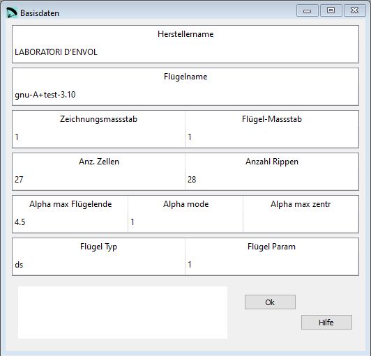
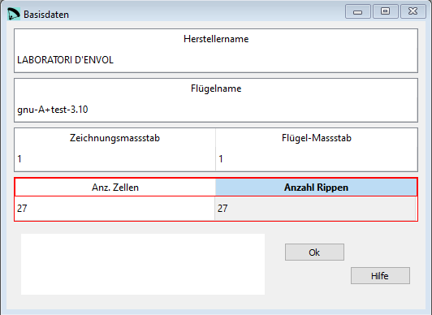

Basisdaten¶
Im Fenster Basisdaten wird ein Teil der Parameter aus dem ersten Abschnitt der Datendatei editiert.
{kind=link}
Rohdaten:
**************************************************************
* 1. GEOMETRY *
**************************************************************
* Brand name
"LABORATORI D'ENVOL"
* Wing name
"gnu-A+test-3.10"
* Drawing scale
1.
* Wing scale
1.
* Number of cells
27
* Number of ribs
28
* Alpha max and parameter
4.5 1
* Paraglider type and parameter
"ds" 1
Zeichnungsmassstab¶
Ein Zeichnungsmassstab von 1 bedeutet dass die Zeichnung im Masstab 1:1 ausgegeben werden.
Flügelmassstab¶
Mit dem Flügelmassstab kann das gesamte Design verkleinert oder vergrössert werden ohne dass man die einzelnen Parameter anpassen muss. Ein Flügelmassstab von 1 bedeutet dass das Desing mit den Originalwerten wie in lepg angegeben übernommen wird.
Anzahl Zellen und Rippen¶
Zwischen Anzahl Zellen und Rippen gibt es eine direkte Beziehung. Bei Werten welche so nicht sein können, werden die Eingabefelder rot umrandet.
{kind=link}
Abhängig von der hier konfigurierten Anzahl Rippen gibt es weitere Fenster welche angepasst werden, z.B. Geometrie und Ankerpunkte.
Die maximale Anzahl Rippen ist 100 pro Seite. (200 Rippen total oder 199 Zellen)
Max Flügelverwindung¶
Definiert die Verwindung zwischen der zentralen Zelle und den Flügelenden.
Alpha max Flügelende¶
Definiert den Verwindungswinkel am Flügelende.
Alpha mode¶
“0” die Definition der Verwindung wird manuell gemacht, wie im Beispuelbild unten aufgezeigt
“1” die Verwindung wird proportional zur Flügeltiefe gemacht. Am Flügelende ist die Verwindung maximal und wird als positiver Winkel mit dem ersten Parameter definiert.
“2” die Verwindung wird automatisch von der zentralen Zelle zum Flügelende berechnte. Wenn der Parameter “2” gesetzt wird, dann muss im letzten Parameter der Alpha Winkel für die zentrale Zelle definiert werden.

Alpha max zentr¶
Wenn der Alpha mode auf “2” gesetzt wird dann Zelle definiert werden.
Flügel Typ and Parameter¶
Flügel Typ¶
“ds” Design und Kalkulation wird angepasst für die Definition von Paraglidern und Fallschirmen mit Ober- und Untersegel
“ss” Design und Kalkulation wird angepasst für Single Skin Paraglider und Fallschirme. Wird dieser Wert gesetzt, gilt es noch weitere Punkte zu beachten. So muss zum Beispiel bei der Definition der Eintrittskante darauf geachtet werden dass diese genau dort platziert wird wo der erste Aufhängepunkt definiert wird. Die Abdeckungen der Einlassöffnungen sind demzufolge Teil des Single Skin Profils.
“pc” Design und Kalkulation wird angepasst für die Definition von Fallschirmen mit Ober- und Untersegel.
Flügel Parameter¶
“0” Die Aufhängungsdreiecke in der Flügelnase werden für bessere Positionierung rotiert. Der Parameter wird nur bei “ss” Flügeln ausgewertet.
“1” Die Aufhängungsdreiecke in der Flügelnase werden nicht rotiert. Der Parameter wird nur bei “ss” Flügeln ausgewertet.

Eine detaillierte Beschreibung in englisch findest Du auf der Laboratori d'envol website.